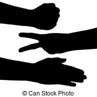

This game is from a tutorial to learn more about HTML, CSS, and JavaScript.
Hope you like the game!

Problem
For Rock Paper Scissors the problem was to make a game played by hand into a web game that made sense to play and felt natural.
Tools
The only development tool used was just a simple text editor. The languages were HTML, CSS, and JavaScript.
Sketches
Brainstorming
The only part of brainstorming for a tutorial is listening and understanding the reasoning for how to set things up and the languages to use. Although, I am in the process of adapting this to be a web based, single player, tic-tac-toe game. This has proven much more complicated and I've been discussing ideas of how to set up the game board, what data structure to store the state of the game in, how to keep track of player turn, etc. with a friend who does web development as a profession. He is acting more like an advisor, but I am coming up with ideas and he gently guides me around the possible pitfalls in my line of reasoning.
User Surveys
This project was before taking the UX Design class so no surveys were performed. In hindsight is it easy to see that surveys should be an obvious thing. The communications between developers can be sketchy at best so, one would think, performing a survey with someone that isn't a developer is a no brainer. Surveys save a lot of time in the long run.
Empathy Maps
Again, not user surveys mean no empathy maps for this project. These do, however, help to focus in on what types of users will be using the app and what to focus most of the developing efforts on. A small percentage of the users shouldn't complicate an app that could be simple to use and understand.
Prototypes
Since this was before the UX Design class I did what most CS students do, go directly to code. There were no prototypes. For something this simple it would be easy to overlook this step. I can see now that it's not a waist of time. This should have been done.
User Testing
I used the feedback from one user on this game after I had finished it. They did have some questions as to if the computer ever went first, how to clear the score board, how do you keep track of a tie, and if you could play with another person online. It was easier to let the person go first every time but since it's a game where technically both players go at the same time, that it didn't really matter. I hadn't even thought of clearing the score board, so this is a feature that definitly would be handy to have. The tie situation also never really occured to me since neither players score would change at that point. The next step would be to take this to a two player online game although many changes would need to be made. Adding a server to the mix would be a minimum change.
Usability Heuristics
At the time that I made this game I didn't even know what heuristics. However I was thinking about how a browser game could look or feel like a game played between two people. The score board is easily identified. The name of the game is easy to read. The realative positioning of the choices of rock, paper, and scissors makes the user choice fairly natural. The choices are in the same order as spoken, so just 1-2-3.